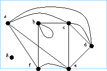

\subsection{Notation for sets and graphs I}
\subsubsection{Disjoint Set notations (Click Me)}
Here $S$ is a set.
For $i$ any suitable symbol, $S^i = S \times \{ i \}$.
Thus $S^\alpha \cup S^1 \cup S^0$ contains three distinct copies of $S$.
(The notation $S^2 = S \times S$ is also used, but our intention
will always be clear by context.)
Define $\sigma : \Z \rightarrow \Z$ by $\sigma(i)=i+1$.
Define $\sigma_- : \Z \rightarrow \Z$ by
$\sigma_-(2)=1$
and $\sigma_-(i)=i$ otherwise.
If $\alpha \in \Z$ then
$\iota^\sigma: S^\alpha \rightarrow S^{\sigma(\alpha)}$
is given by $(x,\alpha) \mapsto (x,\sigma(\alpha) )$.
Extend this naturally so that $\iota^\sigma (S^1 \cup T^0) = S^2 \cup T^1$
and $\iota^{\sigma_-} (S^2 \cup T^0) = S^1 \cup T^0$
and so on.
$P_{S}(T)$ denotes the set of subsets of set $T$ whose orders lie in
list $S \subset \N$.
Example:
$P_{1,2}(\{a,b,c \})
= \{ \{ a \}, \{ b \} , \{ c \}, \{ a,b \} , \{ a,c \} , \{ b,c \} \}$.
%$\mathbb{M,N}$
\subsubsection{Graphs }
An (undirected) graph is a triple $g=(V,E,f)$ where $V,E$ are sets
(vertex set and edge set respectively) and
$f:E \rightarrow P_{1,2}(V)$.
(A handy reference using a slightly different notation is here .)
\subsubsection{Graphs and pictures}
It will be useful to
represent a graph $g$
on a countable vertex set by a
picture.
For an exposition, see
here
or
here
.

%Exercise:
%It will be useful to
% represent a graph $g$ on a countable vertex set by a picture.
A plane drawn picture
$d = \ppic$
is a closed rectangular interval of the plane $R$ together with
a label set $V$, an injective map
$\lambda : V \rightarrow R$, and a subset $S$ of $R$
consisting of smoothly embedded line intervals terminating at
certain of the marked points $\lambda: V$.
(Obviously such a thing can only be approximated by a `drawn picture' in the
artistic sense, but we will use PDPs in such a way that
such approximations are
generally sufficient. With this caveat we will speak of `drawing' PDPs,
and indeed speak of pictures such as the one on the left as if they
are PDPs.)
An alcove of such a picture $\ppic$ is a connected component of
$R \setminus S$.
(See also here.)
A set of line interval embeddings is
generic
if when two lines meet at an unmarked point the tangents do not coincide;
(we may also require that no third line passes through
such a point;)
and no line meets a marked point except at an endpoint.
In order to represent a graph $g=(V,E,f)$ by such a picture $\ppic$,
one proceeds as follows.
First one draws marked points such that each may be identified with a
vertex in $V$.
Each edge $\epsilon$ in $E$ is then represented by a line interval
between the vertices in $f(\epsilon)$, and labelled by $\epsilon$.
There is much freedom of choice in this, but one wants
that a complete single line can be determined unambiguously from the
drawn set of lines.
To this end the set of line interval embeddings is
chosen to be
generic.
(This is sophistry, in that it is not really possible to determine
tangents to lines by looking at drawn pictures, except within some tolerance.
Thus if we use pictures in practice, tangents must not only be
different, but sufficiently different.)
In such a picture we shall call the boundary of the rectangular region
the frame .
A vertex may lie on the frame (call such a vertex exterior),
but by convention
a line interval may touch the frame
only at its endpoints.